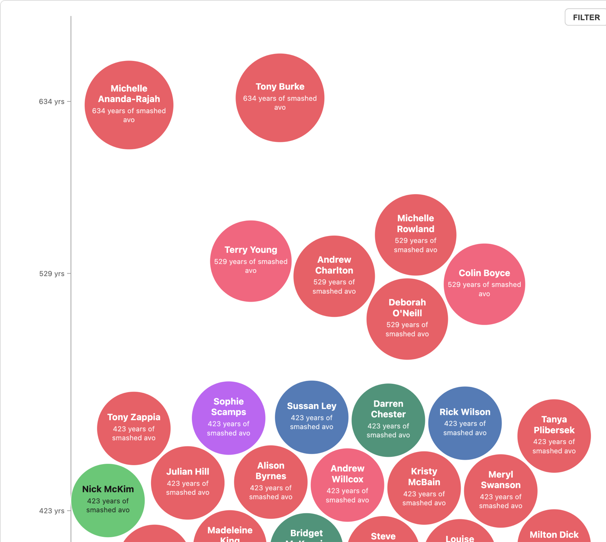
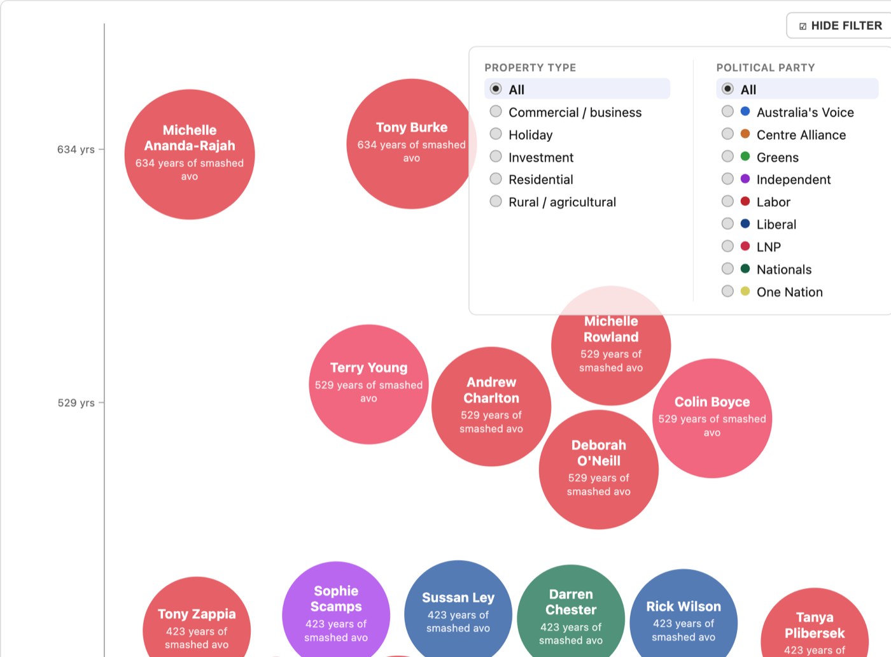
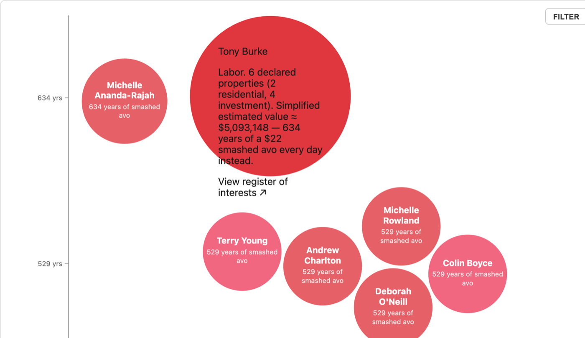

What began as an old VizSweet experiment has been rebuilt from scratch as an independent, reusable data visualisation engine.
Pollywaffle visualises Australian federal politicians' 2025 property declarations through the apparently immortal idea that smashed avocado is what's standing between young Australians and home ownership.
Each politician becomes a balloon:
- vertical position = years of smashed avo
- size = declared property count
- colour = political party

Project & process
- clean-room recreation of the Balloon Race visualisation concept
- reusable React + TypeScript + D3 visualisation engine
- deterministic responsive circle packing
- interactive balloon expansion and detailed metadata
- filtering by political party and property type
- runtime validation and dataset adapters
- updated 2025 parliamentary property-declaration data
- source/provenance links back to official parliamentary records
Balloon Race is the generic engine; Pollywaffle is one dataset/application built on top of it — the same engine also powers a Snake Oil reference visualisation (nutritional supplement evidence) used to validate it independently of Pollywaffle's own data.
Data & methodology
The property data comes from 2025 federal parliamentary declarations compiled by Guardian Australia.
The visualisation converts declared property counts into a deliberately simplified property-value estimate using a national median dwelling value, then converts that figure into "years of smashed avo" using an assumed $22 café price.
This is a satirical affordability index, not an estimate of each politician's actual property portfolio value.
Tech
React, TypeScript, D3, SVG, Vite, Zod, Vitest, React Testing Library
Selected views

